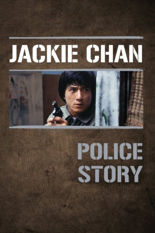

#3055 Police Story 1
 
 IMDB-Wertung: 7.6 / 10
IMDB-Wertung: 7.6 / 10  Metascore: 0
Metascore: 0 
Nach langer und nervenzerreissender Jagd gelingt es Police Detective Kevin den mächtigen Drogenboss Chee endlich zu verhaften! Doch als die Kronzeugin, Chees Sekretärin, aus unerklärlichen Gründen plötzlich verschwindet, wird Chee aus Mangel an Beweisen wieder freigelassen. Ein fataler Fehler, denn kaum auf freiem Fuss, hetzt der gefürchtete Drogenboss seine Männer auf den Detective. Als Kevin auch noch der Mord an einem Kollegen in die Schuhe geschoben wird, beginnt er zu begreifen, dass hier ein übles Spiel gespielt wird...
Jahr: 1985
Dauer: 100 Minuten
FSK: 18
Land: Hong-Kong Studio: Splendid FilmTonspuren:
Untertitel: Deutsch,
Auflösung: 1080p (1920x808) Größe: 8140 MB
Genre: Action, Thriller, Komödie, Krimi
Regisseur:  Jackie Chan, Chi-Hwa Chen
Jackie Chan, Chi-Hwa Chen
Drehbuch: Jackie Chan, Edward Tang
Soundtrack: Kevin Bassinson, Siu-Tin Lai, J. Peter Robinson
Darsteller:
Datei: X:\HD-Eastern-Collections\Jackie Chan\Police Story\Police Story 1 (1985, FSK18, 1920x808).mkv seit 20.01.2016
Festplatte: HD Eastern+Western
 Es gibt insgesamt 58 Filme in der Gruppe 'HD-Eastern-Collections\Jackie Chan'
Es gibt insgesamt 58 Filme in der Gruppe 'HD-Eastern-Collections\Jackie Chan'